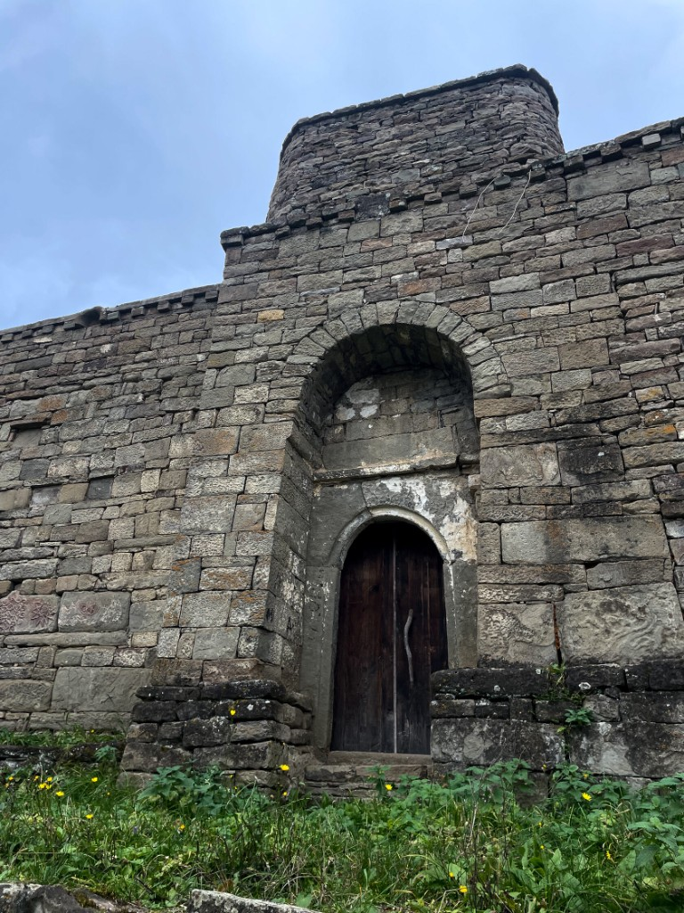

← К достопримечательностям

Древний Кала-Корейш
Цитадель с видом на вечные горы
Фортификация на горе — отдельный по времени и нагрузке блок маршрута. Уточняйте транспорт, обувь и погоду: гид подскажет реалистичный сценарий.
Свяжитесь заранее — согласуем выезд, длительность и сочетание с прогулкой по самому селу Кубачи.